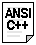

|
Section 1.3 Operators. |
 |
|
| |
|
Section 1.3 Operators. |
|
|
| |
Once we know of the existence of variables and constants we can begin to operate with them. For that purpose, C++ provides the operators, which in this language are a set of keywords and signs that are not part of the alphabet but are available in all keyboards. It is important to know them since they are the basis of the C++ language.
You do not have to memorize all the content of this page, since the details are only provided to serve you as a later reference in case you need it.
a = 5;assigns the integer value 5 to variable a. The part at the left of the = operator is known as lvalue (left value) and the right one as rvalue (right value). lvalue must always be a variable whereas the right side can be either a constant, a variable, the result of an operation or any combination of them.
It is necessary to emphasize that the assignation operation always takes place from
right to left and never at the inverse.
a = b;assigns to variable a (lvalue) the value that contains variable b (rvalue) independently of the value that was stored in a at that moment. Consider also that we are only assigning the value of b to a and that a later change of b would not affect the new value of a.
For example, if we take this code (with the evolution of the variables' content in green color):
it will give us as result that the value contained in a is 4 and the one contained in b is 7. The final modification of b has not affected a, although before we have declared a = b; (right-to-left rule).int a, b; // a:? b:? a = 10; // a:10 b:? b = 4; // a:10 b:4 a = b; // a:4 b:4 b = 7; // a:4 b:7
A property that has the assignation operation in C++ over other programming languages is that an assignation operation can be used as rvalue (or part of an rvalue) for another assignation. For example:
a = 2 + (b = 5);is equivalent to:
b = 5;that means: first assign 5 to variable b and then assign to a the value 2 plus the result of the previous assignation of b (that is 5), remaining a with a final value of 7. Thus, the following expression is also valid in C++:
a = 2 + b;
a = b = c = 5;assigns 5 to the three variables a, b and c.
Operations of addition, subtraction, multiplication and division would not suppose an understanding challenge for you since they literally correspond with their respective mathematical operators.
+ addition - subtraction * multiplication / division % module
The only one that may not be known by you is the module, specified with the percentage sign (%). Module is the operation that gives the rest of a division of two integer values. For example, if we write a = 11 % 3;, the variable a will contain 2 as result since 2 is the rest from dividing 11 between 3.
value += increase; is equivalent to value = value + increase;and the same for all other operations.
a -= 5; is equivalent to a = a - 5;
a /= b; is equivalent to a = a / b;
price *= units + 1; is equivalent to price = price * (units + 1);
a++;are all equivalent in its functionality: the three increase by 1 the value of a.
a+=1;
a=a+1;
Its existence is due to that in the first C compilers the three previous expressions produced different executable code according to which one was used. Nowadays this type of code optimization is generally done automatically by the compiler.
A characteristic of this operator is that it can be used both as a prefix or as a suffix. That means it can be written before the variable identifier (++a) or after (a++) and, although in so simple expressions like a++ or ++a they have exactly the same meaning, in other operations in which the result of the increase or decrease operation is evaluated as another expression they may have an important difference in their meaning: In case that the increase operator is used as a prefix (++a) the value is increased before the expression is evaluated and therefore the increased value is considered in the expression; in case that it is used as a suffix (a++) the value stored in a is increased after being evaluated and therefore the value stored before the increase operation is evaluated in the expression. Notice the difference:
In Example 1, B is increased before its value is copied to A. While in Example 2, the value of B is copied to A and B is later increased.
Example 1 Example 2 B=3;
A=++B;
// A is 4, B is 4B=3;
A=B++;
// A is 3, B is 4
We may want to compare two expressions, for example, to know if they are equal or if one is greater than the other. Here is a list of the relational operators that can be performed in C++:
Here you have some examples:
== Equal != Different > Greater than < Less than >= Greater or equal than <= Less or equal than
of course, instead of using only numberic constants, we can use any valid expression, including variables. Suppose that a=2, b=3 and c=6,
(7 == 5) would return false. (5 > 4) would return true. (3 != 2) would return true. (6 >= 6) would return true. (5 < 5) would return false.
Be aware. Operator = (one equal sign) is not the same as operator == (two equal signs), the first is an assignation operator (assigns the right side of the expression to the variable in the left) and the other (==) is a relational operator of equality that compares whether both expressions in the two sides of the operator are equal to each other. Thus, in the last expression ((b=2) == a), we first assigned the value 2 to b and then we compared it to a, that also stores value 2, so being true the result of the operation.
(a == 5) would return false. (a*b >= c) would return true since (2*3 >= 6) is it. (b+4 > a*c) would return false since (3+4 > 2*6) is it. ((b=2) == a) would return true.
|  In many compilers previous to the publication of the ANSI-C++ standard, as well as in the C language, the relational operations did not return a bool value true or false, rather they returned an int as result with a value of 0 in order to represent "false" and a value different from 0 (generally 1) to represent "true". For more information, or if your compiler does not support the bool type, consult the section bool type. |
Logic operators && and || are used when evaluating two expressions to obtain a single result. They correspond with boolean logic operations AND and OR respectively. The result of them depends on the relation between its two operands:
!(5 == 5) returns false because the expression at its right (5 == 5) would be true. !(6 <= 4) returns true because (6 <= 4) would be false. !true returns false. !false returns true.
For example:
First
Operand
aSecond
Operand
bresult
a && bresult
a || btrue true true true true false false true false true false true false false false false
( (5 == 5) && (3 > 6) ) returns false ( true && false ).
( (5 == 5) || (3 > 6)) returns true ( true || false ).
condition ? result1 : result2if condition is true the expression will return result1, if not it will return result2.
7==5 ? 4 : 3 returns 3 since 7 is not equal to 5. 7==5+2 ? 4 : 3 returns 4 since 7 is equal to 5+2. 5>3 ? a : b returns a, since 5 is greater than 3. a>b ? a : b returns the greater one, a or b.
For more information about binary numbers and bitwise operations, consult Boolean logic.
op asm Description & AND Logical AND | OR Logical OR ^ XOR Logical exclusive OR ~ NOT Complement to one (bit inversion) << SHL Shift Left >> SHR Shift Right
int i;The previous code converts the float number 3.14 to an integer value (3). Here, the type casting operator was (int). Another way to do the same thing in C++ is using the constructor form: preceding the expression to be converted by the type and enclose the expression between parenthesis:
float f = 3.14;
i = (int) f;
i = int ( f );Both ways of type casting are valid in C++. And additionally ANSI-C++ added new type casting operators more specific for object oriented programming (Section 5.4, Advanced class type-casting).
a = sizeof (char);This will return 1 to a because char is a one byte long type.
a = 5 + 7 % 2we may doubt if it really means:
a = 5 + (7 % 2) with result 6, orThe correct answer is the first of the two expressions, with a result of 6. There is an established order with the priority of each operator, and not only the arithmetic ones (those whose preference we may already know from mathematics) but for all the operators which can appear in C++. From greatest to lowest priority. The priority order is as follows:
a = (5 + 7) % 2 with result 0
Priority Operator Description Associativity 1 :: scope Left 2 () [ ] -> . sizeof Left 3 ++ -- increment/decrement Right ~ Complement to one (bitwise) ! unary NOT & * Reference and Dereference (pointers) (type) Type casting + - Unary less sign 4 * / % arithmetical operations Left 5 + - arithmetical operations Left 6 << >> bit shifting (bitwise) Left 7 < <= > >= Relational operators Left 8 == != Relational operators Left 9 & ^ | Bitwise operators Left 10 && || Logic operators Left 11 ?: Conditional Right 12 = += -= *= /= %=
>>= <<= &= ^= |=Assignation Right 13 , Comma, Separator Left
Associativity defines -in the case that there are several operators of the same
priority level- which one must be evaluated before, the rightmost one or the leftmost
one.
All these precedence levels for operators can be manipulated or become more legible
using parenthesis sign ( and ) like in this example:
a = 5 + 7 % 2;might be written as:
a = 5 + (7 % 2); oraccording to the operation that we wanted to perform.
a = (5 + 7) % 2;
So if you want to write a complicated expression and you are not sure of the precedence levels include always parenthesis. It will probably be also a more legible code.
| © The C++ Resources Network, 2001 - All rights reserved |
 Previous:
Previous:1-2. Variables. Data types. Constants. |
 index |
 Next:
Next:1-4. Communication through console. |